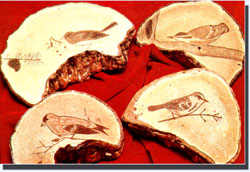
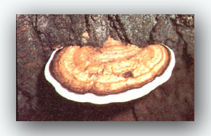

You can gather a beautiful mushroom called the "artist fungus" (genus Fomes) from tenceposts, stumps, and dead and dying trees ... then-when etched with your own artistic designs-these dani zens of the woods can be sold for $5 to $10 apiece!
Most deciduous trees will ultimately fall prey to such parasitic bracket mushrooms (the fungi are characterized by hard-shelled tops and light, spore-covered, leathery undersides), but the members of the genus Fomes are most easily found in wet ash or beech woodlands.
When you harvest this natural art product, you are actually "doctoring" the forest . . because one such living mushroom releases 30 billion spares in each 24 hour period of its six-month growth. These tiny "seeds" are carried by the wind to wounds in nearby trees and grow new, destructive fungi.
It's best to pick the tough, woody polypores in the late autumn or winter months ... and then to dry the well-shaped, usable specimens for a week or more before you draw on the undersides with a sharp nail, etching tool, or dry fountain pen. For light shades, apply only a lit tle pressure to your instrument ... dark tones are obtained by making deep marks on the fungus' surface. The colors and shades, which range from buff to dark brown, will also vary with the abundance or scarcity of powdery spores.
When a sketch is finished, apply one or two coats of high-grade, nonyellowing polyurethane ... and allow each coat to soak in evenly. (The varnish will darken the picture, but only temporarily.) When it's dry, you can scratch the varnish to further emphasize the light areas of the etching. Your fungal artwork can then be hung by a small hook fastened in the top of the hard-shelled side, or-with three nails as legs-it can be displayed as a miniature mushroom easel.
|
 STAFF PHOTOS A tidy little home business can be built around decorating artist's fungi with designs such as those shown here. All that's needed are some bracket mushrooms?they literally grow on trees!?an engraving tool (a sharp nail or even a dry fountain pen will do), and some polyurethane varnth hey protect your masterpiece. |
 Pick "living canvas" artist's fungus in late autumn or winter. |
|